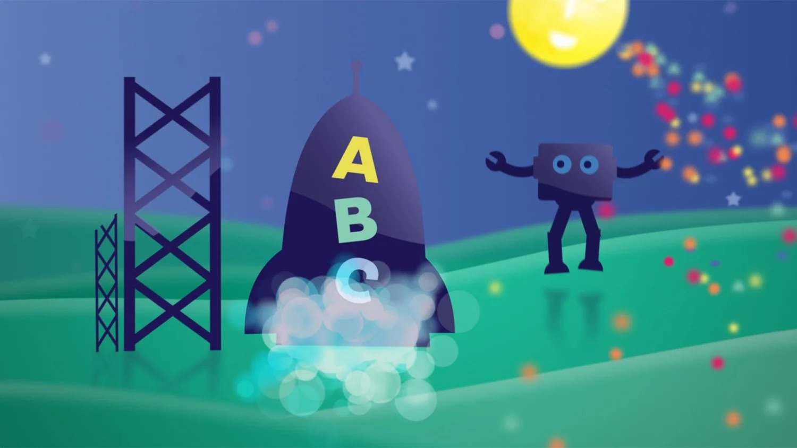
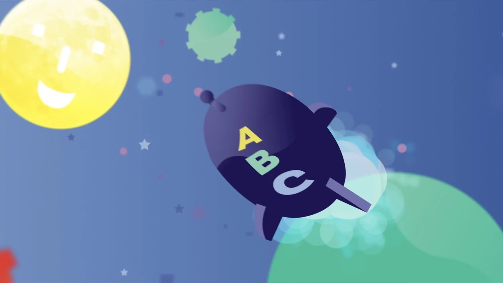
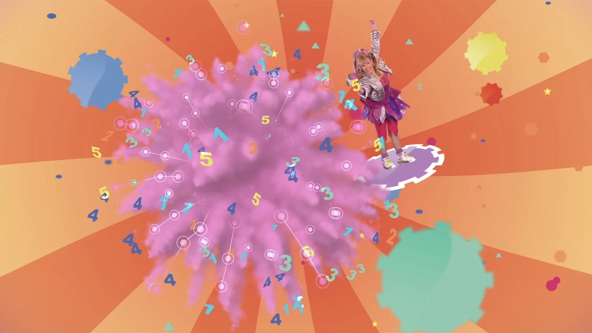
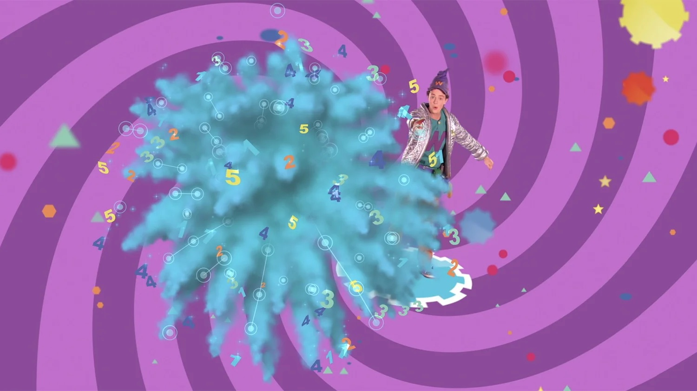
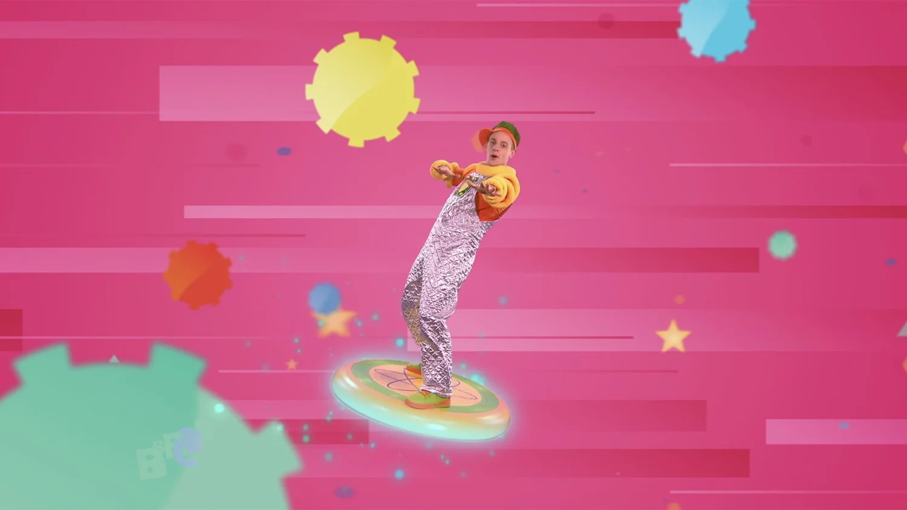
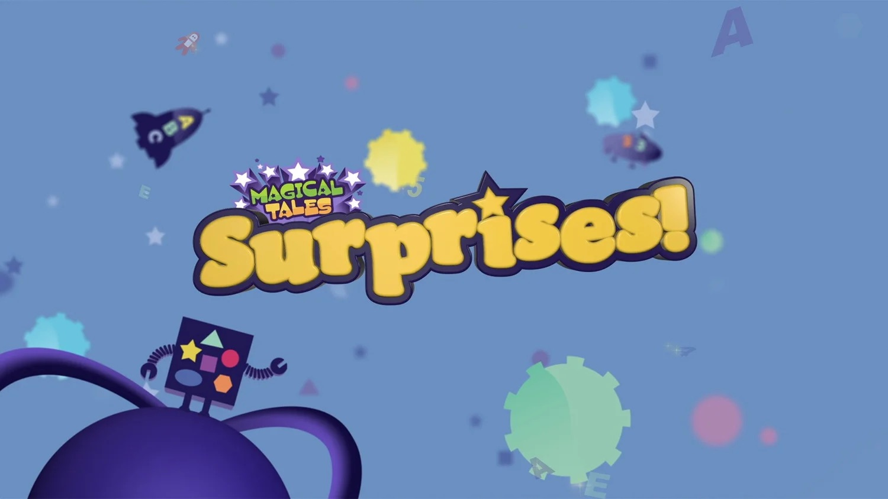

Broadcast · Children’s television
Surprises! graphics package
Surprises! is an Australian preschool television series produced by Ambience Entertainment, first aired on the Nine Network and later on 9GO!. A spin-off from William and Sparkles’ Magical Tales (which I also worked on), the show follows William the Wizard, Sparkles the Fairy, and their space-courier friend Digby Dash as they whisk preschoolers through a whimsical contraption where every episode delivers a new surprise.
I designed and animated the full graphics package, bringing the world of Surprises! to life with fun, quirky visual effects. Using Trapcode Particular, I created playful particle animations and compositing work that gave the series its sparkling, otherworldly energy.
The package included the opening titles, closing sequence, Digby’s theme song, animated transitions, and a suite of backgrounds - delivering a cohesive, imaginative brand identity that supported the show’s magical storytelling.





